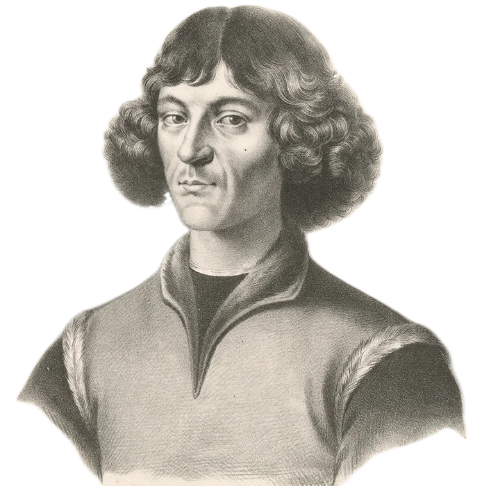

Mikołaj Kopernik
Prezentacja wykonana przez
Fabiana Stefańskiego oraz Filipa Pietruszyńskiego
Mikołaj Kopernik
Mikołaj Kopernik urodzony 19 lutego 1473 w Toruniu
Był najmłodszym z czworga dzieci toruńskiego kupca Mikołaja Kopernika Sr. i Barbary Watzenrode.
Wybitny astronom
Kopernik jest najbardziej znany jako astronom.
Twórca heliocentrycznego Układu Słonecznego i prawdopodobnie pierwszy heliocentryk w Europie od czasów starożytnej Grecji.
Kopernik jest autorem dzieła (o obrotach sfer niebieskich) przedstawiającego szczegółowo jego wizje Wszechświata.
Nie tylko Astronomia
Mikołaj Kopernik zajmował się również
innymi dziedzinami, takimi jak:
strategia wojskowa i ekonomia oraz kartografia

Nawet polityka!
Kopernik pełnił wiele funkcji administracyjnych i urzędów, np:
· Generalny administrator biskupstwa warmińskiego po zgonie biskupa Fabiana Luzjańskiego.
· Kanclerz kapituły katedralnej warmińskiej (1511–1513, 1520, 1524–1525, 1529).
· Zarządca kasy aprowizacyjnej (1513).
· Kanonik warmińskiej kapituły katedralnej (od 1497).
· Komisarz Warmii (1521).
· Scholastyk wrocławskiej Kolegiaty Świętego Krzyża i św. Bartłomieja (1503–1538)
Kopernik, patron wielu szkół i instytucji
Wybitnego toruńczyka uwieczniło nie tylko kilka wspomnianych terminów naukowych od jego nazwiska.
Został patronem dziesiątek szkół, co najmniej kilkunastu innych instytucji – głównie badawczych i oświatowych – oraz kilku nagród oraz czsopism naukowych.
A teraz szybki quiz!